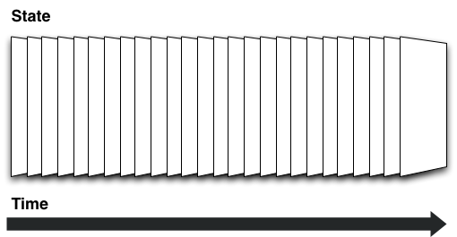
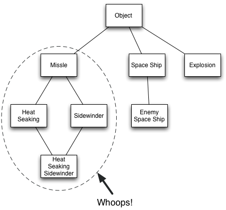
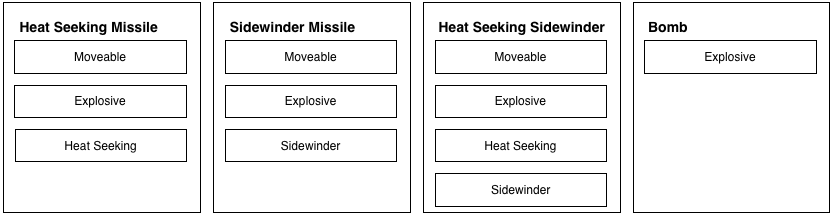

// Example taken from http://www.gamedev.net/page/resources/_/technical/game-programming/making-a-game-engine-core-design-principles-r3210 // A Game object that iterates over each entity and induces side effects class Game { Player player; Enemy[] enemies; void update() { foreach (Enemy enemy in enemies) { if (Math.abs(enemy.y - player.y) < EnemySightRange && Math.abs(enemy.x - player.x)) { enemy.moveTowards(player.x, player.y); } } if (input.keyDown('left')) { player.move(-1, 0); } // ... rest of player logic } void draw() { player.draw(); foreach (Enemy enemy in enemies) { enemy.draw(); } } }
;; Reduce the game state over a collection of functions to get the next frame (reduce (fn [accum f] (f accum)) state [f1 f2 f3 f4])


{:player1 [:controllable :moveable :collidable]}
{:moveable f}
{:movement f}
{:title-screen [:main-menu :input]
:game [:input :movement :ai]}
dynamic as fuck!…
Game state is a data structure, like a database
{}
All state, functions, and execution order is queried from state at game time
(get-in state [:systems :movement])
The game loop recursively calls a function of state
(f (f state))
The game function reduces over all system functions
(reduce (fn [state f] (f state)) init-state [s1 s2 s3 s4])
A system function reduces over entities that participate in a component
(reduce f state entity-ids)
A component function takes state and returns new state modified for that entity ID only
(fn [state] ...)
(combine-fn (body-fn (args-fn input)))
(defn component-f ;; Default args, but can be customized when declaring the component [entity-id component-state opts] ;; Returns updated component state (body ...)) ;; Wrapped with mk-component-fn it returns a function that takes ;; game state and entity-id as arguments ((mk-component-fn :component-1 component-f) state :player1)
;; Dispatch on the entity-id (defmulti move (fn [entity-id & args] entity-id)) (defmethod move :default (fn [_ component-state opts] (body ...))) (defmethod move :player1 (fn [_ component-state opts] (update component-state :pos #(map inc %))))
(defn attack [entity-id component-state player-state] (when (colliding? component-state player-state) (set! (.-damage player-state) 5)) component-state)
(defn attack [entity-id component-state player-state] (if (colliding? component-state player-state) [component-state (mk-event {:damage 5} [:attack :player1])] component-state)) (defn health [entity-id component-state {:keys [inbox]}] (update component-state :hitpoints (fn [hitpoints] (reduce #(+ %1 (get-in %2 [:msg :damage])) hitpoints inbox))))
…maybe macros later, for syntactic sugar only
(mk-game-state ;; Starting with an empty hashmap or an existing hashmap {} :default ;; What scene ID to start with ;; A scene with an ID of :default that has a collection of systems ;; to be called in sequential order [:scene :default [:input :movement :animate :render :events]] ;; Event system to be used for inter component communication [:system :events event-system] ;; Updates the user input from keyboard [:system :input input-system] ;; Render system for drawing sprites [:system :render render-system] ;; Animation system for animating sprites [:system :animate animation-system :animateable] ;; Animation component that subscribes to action events [:component :animateable [animate {:args-fn include-moveable-state :subscriptions [:action]}]] ;; [:system :movement movement-system :moveable] [:component :moveable [move {:subscriptions [:move-change :collision]}]])
(defmulti mk-state (fn [state args] (first args))) (defmethod mk-state :entity [state [_ & args]] (apply (partial ces/mk-entity state) args)) (defmethod mk-state :component [state [_ & args]] (apply (partial ces/mk-component state) args)) (defmethod mk-state :system [state [_ & args]] (apply (partial ces/mk-system state) args)) (defmethod mk-state :scene [state [_ & args]] (apply (partial ces/mk-scene state) args)) (defn mk-game-state [state init-scene-id & specs] (reduce (fn [accum args] (mk-state accum args)) (assoc-in state scene-id-path init-scene-id) specs))
(defn foo [x & args] (body ..))
(defn foo ([x] (foo x nil)) ([x y] (bar x y)))
(apply (partial x) [y z])
;; Bad (empty? []) ;; Good (seq [])
;; Bad (defmulti foo (fn [& args] ...)) ;; Good, but less elegant (condp = x ...) ;; Fastest?? (defprotocol Fooable (foo [this x])) (deftype Thing Fooable (foo [this x] ...))
;; Vector 1 2 3 is constructed every time foo is called (defn foo [x] (concat [x] [1 2 3])) ;; Skips the construction of a persistent vector each time ;; foo is called (def one-two-three [1 2 3]) (defn foo [x] (concat [x] one-two-three))
Thank you! @alexkehayias https://github.com/alexkehayias/chocolatier
Created by Alex Kehayias